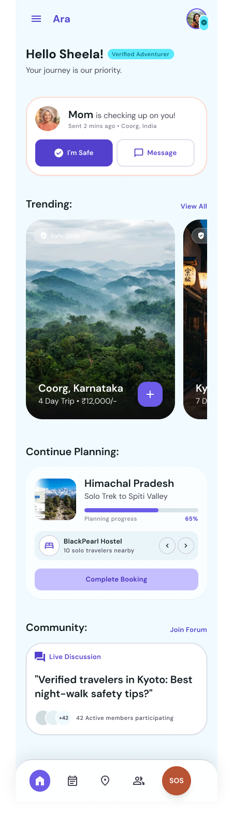
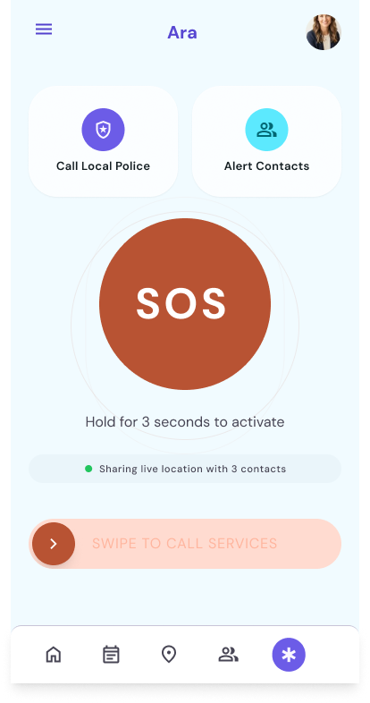
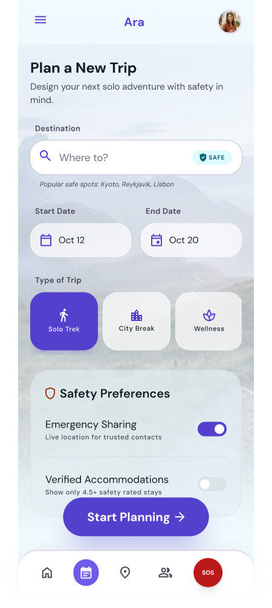
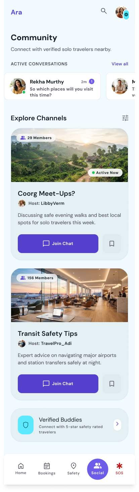
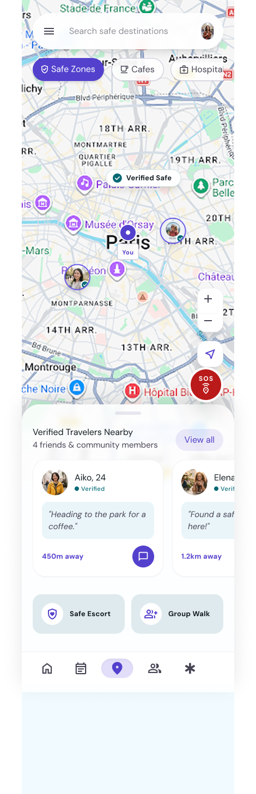
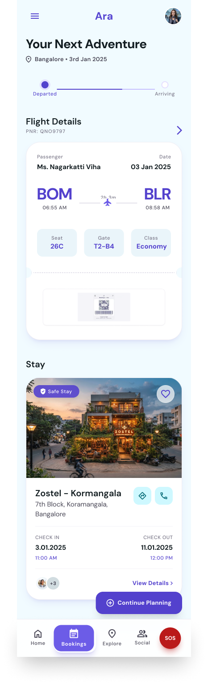
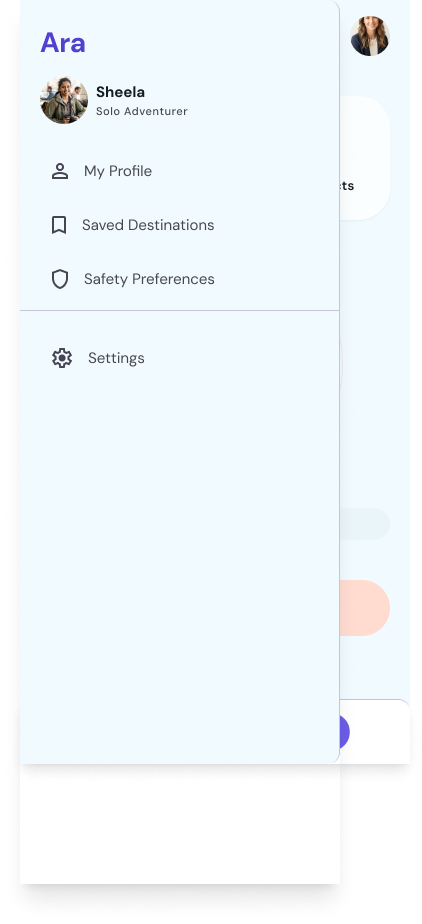
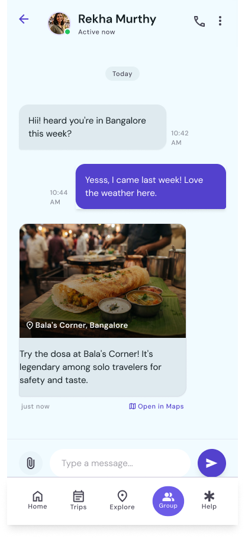
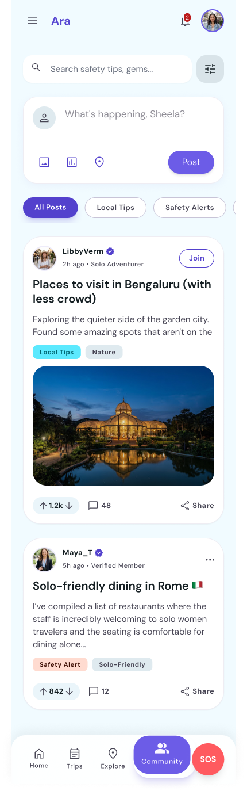

Offline SOS and real-time safety alerts for solo travellers — designed specifically for the 59% of solo travellers who are women. No existing competitor offered both features. Research published at Springer, presented at Cambridge.

Home — safety overview

SOS — hold 3s to activate

Plan a trip — safety first

Community channels

Safety map — Paris, verified travelers

Bookings — safe stay verified

Profile & safety preferences
A competitive audit of 12 solo travel apps found a consistent split: apps either offered basic SOS (no offline fallback) or itinerary planning (no safety features). The intersection — real-time alerts plus offline capability — was absent from the market.
Primary research confirmed what the data suggested: solo women travellers made safety compromises constantly — avoiding neighbourhoods, manually checking in with friends, skipping activities — because tools available left them unsupported.
Research — 59% solo travellers are women, competitive audit findings
Competitive audit — 12 apps benchmarked, 3 personas defined
Yet existing apps were gender-neutral at best. No app centred women's specific safety needs.
Many high-risk scenarios (remote areas, crowded events, foreign SIM issues) occur exactly when connectivity is lowest.
90% of solo travellers said they'd met others and felt safer travelling together. Verification was the missing trust layer.
Raw crime data is anxiety-inducing. Users needed relative risk — "safer than average" vs "avoid after 9pm."
Trip planning flow

Verified traveler chat

Community safety tips feed
"The key insight was separating 'danger' (binary, high-alert) from 'awareness' (contextual, ambient). The app had to do both without conflating them — anxious users make poor decisions."
Home — I'm Safe check-in
Safety map — verified zones
SOS — silent, hold 3s
Bookings + safe stay
Springer publication (2024): The underlying research on solo travel safety gaps was accepted and published in a Springer conference proceedings volume, validating both the identified market gap and the proposed solution framework.
Cambridge presentation: Findings were presented at Cambridge University, receiving feedback from UX researchers and travel industry professionals. Key takeaway incorporated: ambient awareness without triggering anxiety spirals.
Questions about this project?